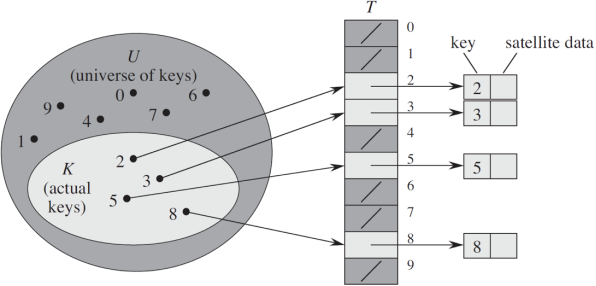

什么是数据结构
- 数据结构是指相互之间存在着一种或多种关系的数据元素的集合和该集合中数据元素之间的关系组成。
- 简单来说，数据结构就是设计数据以何种方式组织并存储在计算机中。比如：列表、集合与字典等都是一种数据结构。
- N.Wirth: “程序=数据结构+算法”
数据结构的分类
- 数据结构按照其逻辑结构可分为线性结构、树结构、图结构
- 线性结构：数据结构中的元素存在一对一的相互关系
- 树结构：数据结构中的元素存在一对多的相互关系
- 图结构：数据结构中的元素存在多对多的相互关系
列表
-
列表：在其他编程语言中称为“数组”，是一种基本的数据结构类型
-
关于列表的问题
- 列表中元素使如何存储的？
- 列表提供了哪些基本的操作？
- 这些操作的时间复杂度是多少？
栈
- 栈(Stack)是一个数据集合，可以理解为只能在一端进行插入或删除操作的列表
- 栈的特点：后进先出（last-in, first-out）
- 栈的概念：
- 栈顶
- 栈底
- 栈的基本操作
- 进栈（压栈）：push
- 出栈：pop
- 取栈顶：gettop
栈的python实现
不需要自己定义,使用列表结构即可
- 进栈函数:append()
- 出栈函数:pop
- 查看栈顶函数:li[-1]
队列
- 队列(Queue)是一个数据集合，仅允许在列表的一端进行插入，另一端进行删除
- 进行插入的一端称为队尾(rear)，插入动作称为进队或入队
- 进行删除的一端称为队头(front)，删除动作称为出队
- 队列的性质：先进先出(First-in, First-out)
- 双向队列：队列的两端都允许进行进队和出队操作
队列的实现
- 初步设想:列表+两个下标指针
- 创建一个列表和两个变量,front变量指向队首,rear变量指向队尾,初始时,front和rear都为0
- 进队操作:元素写到li[rear]的位置,rear自增1
- 出队操作:返回li[front]的元素,front自增1
环形队列
- 环形队列：当队尾指针front == Maxsize + 1时，再前进一个位置就自动到0。
- 实现方式：求余数运算
- 队首指针前进1：front = (front + 1) % MaxSize
- 队尾指针前进1：rear = (rear + 1) % MaxSize
- 队空条件：rear == front
- 队满条件：(rear + 1) % MaxSize == front
队列的内置模块
- 使用方法:from collections import deque
- 创建队列：queue = deque(li)
- 进队：append
- 出队：popleft
- 双向队列队首进队：appendleft
- 双向队列队尾出队：pop
链表
- 链表中每一个元素都是一个对象，每个对象称为一个节点，包含有数据域key和指向下一个节点的指针next。通过各个节点之间的相互连接，最终串联成一个链表。
- 节点定义
class Node(object):
def __init__(self, item=None):
self.item = item
self.next = None
- 头插法
def createLinkList(li):
l = Node()
for num in li:
s = Node(num)
s.next = l.next
l.next = s
return l
- 尾插法
def create_linklist_tail(li):
head = Node()
tail = head
for val in li:
p = Node(val)
tail.next = p
tail = p
return head
- 链表节点的插入
p.next = curNode.next
curNode.next = p
- 链表的删除
p = curNode.next
curNode.next = curNode.next.next
del p
双链表
- 双链表中每个节点有两个指针：一个指向后面节点、一个指向前面节点
- 节点定义
class Node(object):
def __init__(self, item=None):
self.item = item
self.next = None
self.prior = None
- 双链表节点的插入
p.next = curNode.next
curNode.next.prior = p
p.prior = curNode
curNode.next = p
- 双链表节点的删除
p = curNode.next
curNode.next = p.next
p.next.prior = curNode
del p
链表-复杂度分析
- 列表和链表
- 按元素值查找
- 按下标查找
- 在某元素后插入
- 删除某元素
- 链表在插入和删除的操作上明显快于顺序表
- 链表的内存可以更灵活的分配
- 试利用链表重新实现栈和队列
- 链表这种链式存储的数据结构对树和图的结构有很大的启发性
哈希表
- 哈希表一个通过哈希函数来计算数据存储位置的数据结构，通常支持如下操作：
- insert(key, value)：插入键值对(key,value)
- get(key)：如果存在键为key的键值对则返回其value，否则返回空值
- delete(key)：删除键为key的键值对
直接寻址表
- 当关键字的全域U比较小时，直接寻址是一种简单而有效的方法。

- 直接寻址法技术缺点
- 当域U很大时,需要消耗大量内存,很不实际
- 如果域U很大而时间出现的key很少,则大量空间被浪费
- 无法处理关键字不是数字的情况
哈希
- 直接寻址表：key为k的元素放到k位置上
- 改进直接寻址表：哈希（Hashing）
- 构建大小为m的寻址表T
- key为k的元素放到h(k)位置上
- h(k)是一个函数，其将域U映射到表T[0,1,...,m-1]